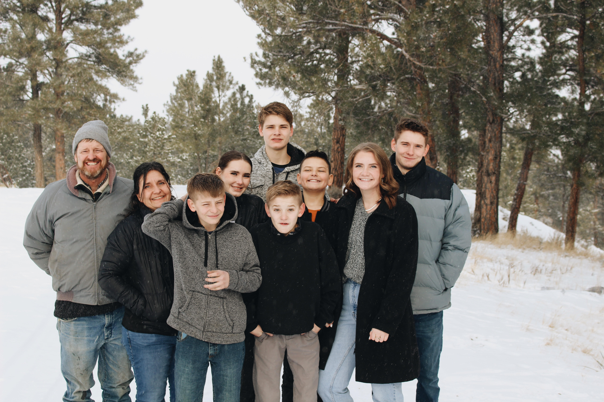
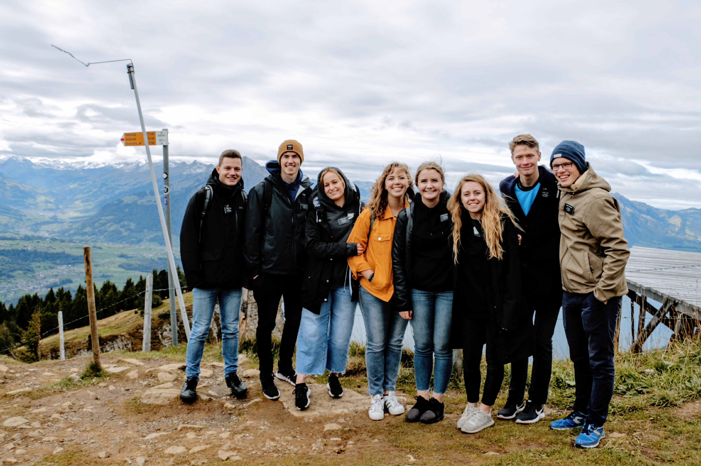

I was born and raised in Northern Utah, went to school in Southern Utah, stepped out of the country to live in Europe for a couple of years, and am now in central Utah attending BYU. I love being physically active and traveling. I have gotten the privilege of visiting 16 different countries and am working on expanding my list. I am passionate about helping people and creating positive experiences.
I come from business background (my father owns a successful e-commerce business) and I have always connected with the logical aspects of the business field. I have worked a variety of jobs in the business field. most recent being as an administrative assistant at a health care facility and as a director of client success at a law firm.
I love connecting with people and helping them have positive interactions with the company I am working for. Throughout my work experiences I have learned excellent customer service, managing client success, detailed record-keeping, and basic office functions including excel, CRM databases, and tableau.
I look forward to expanding my knowledge in the business world and continuing to build connections with those around me.
My seven siblings and I grew up very close. They're my greatest examples.
For 18 months I got to experience living in Switzerland and Austria as a full time missionary for the Church of Jesus Christ of Latter Day Saints.
These are some of my favorite Swiss views.